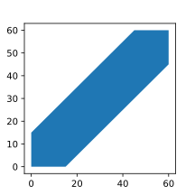

Основные типы вероятностных пространств
1. Дискретное вероятностное пространство
\( {\Omega, \mathcal{F}, P} \) называются дискретным вероятностным пространством, если
- \( \Omega \) - не более чем счётное
- \( \mathcal{F} \) - множество всех подмножеств \( \Omega \)
- \( \forall A \in \mathcal{F} \quad P(A) = \sum_{\omega_i \in A} P(\omega_i) \)
Частный случай - классическое пространство: \( \Omega = \{ \omega_1, \ldots, \omega_n \} \) - конечное, \( P(\omega_i) = \frac{1}{n} \).
2. Геометрическое определение вероятности
Если исходов более чем счётное множество, то дискретное вероятностное пространство не подходит.
Пусть существует некоторая область D в \( \mathbb{R}^n \). Бросим точку в эту область. Тогда вероятность попадания P точки в область G \( (G \subset D) \) будет равна \[ P = \dfrac{\mu(G)}{\mu(D)} \] где \( \mu(G) \) - мера Лебега множества G
\[ \mu(G) = \int_G \mathrm{d} x \qquad \mu(D) = \int_D \mathrm{d} x \]
При таком определении предполагается, что никакие части D не является более предпочтительное для попадания.
Задача о встрече
Два человека договорились встретиться с полудня до часу дня, но забыли в какое точное время. Пришедший первым ждёт другого 15 минут. Чему равна вероятность, что они встретятся?
Для того чтобы они встретились необходимо, чтобы разница между временем, когда пришёл первый, и когда пришёл второй, была меньше 15 минут. Если представить это в виде графика, оси x и y которого будут соответствовать времени, когда пришёл первый и второй соответственно, то получим следующее:

Синим помечена область, когда они встретятся друг с другом. Если представить событие, как пару чисел (x, y), где x - время, когда пришёл первый, а y - когда пришёл второй, то задачу можно свести к вероятности попадания точки (x, y) в синюю область. Тогда вероятность будет равна \[ P = \dfrac{\mu(\text{синяя область})}{\mu(\text{вся область})} = \dfrac{3600 - 45 \cdot 45}{3600} = \dfrac{1575}{3600} = \dfrac{7}{16} \]